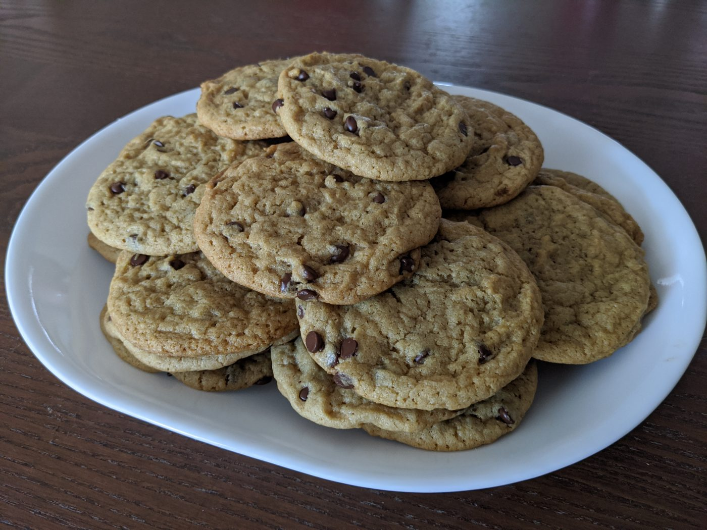

Chocolate Chip Cookies (Thin and Chewy)
Ingredients
Dry
- 2 1/2 cups all-purpose flour
- 1 tsp baking powder
- 1 tsp baking soda
- 1/2 tsp salt
Wet
- 2/3 cup canola oil
Same amount of peanut butter also works if you want to mix it up - 2/3 cup granulated sugar
Coarse sugar really doesn’t work here – you want something fine-grained - 2/3 cup brown sugar
I used dark, but light probably works fine - 1/2 cup plant milk
I’ve used unsweetened oat milk and almond milk successfully - 2 tsp vanilla
Instructions
-
Preheat the oven to 350 F
-
In a large bowl, combine your wet ingredients.
Note that there’s two lines for canola oil – that’s because 2/3 cups + 3 Tbs doesn’t come out to a nice round number. But the extra 3 Tbs is important to get the right texture.
-
In a medium bowl, whisk together your dry ingredients.
-
Slowly pour the dry ingredients into the wet ingredients, whisking as you go. After everything is combined, you should have a texture that is doughy, but still slowly drips/falls off the whisk.
-
Add in as many chocolate chips as you want. At this point, it’s usually easier to fold them in with a spatula.
-
Place on a cookie sheet with some room to spare – these will spread. I highly recommend a cookie scoop. This recipe should make ~24 1.5 Tbs cookies.
-
Bake for 11-14 minutes, or until you just start to see the edges brown. Let cool for 5 minutes on the sheet afterwards before moving to a wire rack.
The cookies will be very soft when they come out, but should firm considerably. Warm cookies are always great, but I particularly love these after they’ve cooled completely, at which point they’ll be a bit chewier.